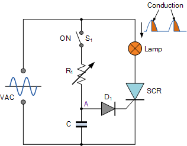

Um tiristor é um dispositivo semicondutor de estado sólido que funciona como um diodo, ou seja, a corrente flui em uma direção, do ânodo para o cátodo, desde que a tensão entre o ânodo e o cátodo seja positiva, mas somente se a tensão do cátodo-porta excedeu um determinado valor.
Sua curva característica e estrutura da camada são mostradas na figura seguinte.



A figura acima mostra um circuito elétrico que pode ser usado para controlar a luz emitida por uma lâmpada usando um tiristor.
Quando alternar S1 é fechado, o circuito formado pelo resistor Rte capacitor C reproduz o VAC sinal nos terminais C, masatraso no tempo. Quando esta tensão em C excede ovalor de condução do diodo D1 (aproximadamente 0,6 V) mais a tensão necessária paraexcita o portão do tiristor SCR(um valor inferior a "Intervalo da frente sobre"), o tiristor então começa a conduzir. Isto é mostrado no gráfico acima à direita ("Condução").
Quanto mais o atraso em excitar o portão do tiristor, mais curto o tempo que ele vai conduzir, e, portanto, ocorrente média fluindo através dele em um cicloserá mais baixo. A luz emitida pelo "Lâmpada" bulbo é maior quanto maior esta corrente média é. Este atraso é proporcional aos valores de Rte C, isto é, o maior Rt é, quanto mais o momento de entrada na condução será atrasado, e portanto o tempo de condução será menor. Por outras palavras,R superiort ⇒menos luz.
Este é o mesmo princípio utilizado naIniciador suave, exceto que em cada fase da rede elétrica dois tiristors são colocados em "antiparalelo", isto é, conectando o cátodo de um ao ânodo do outro, de modo que o circuito opera em ambos os semiciclos.